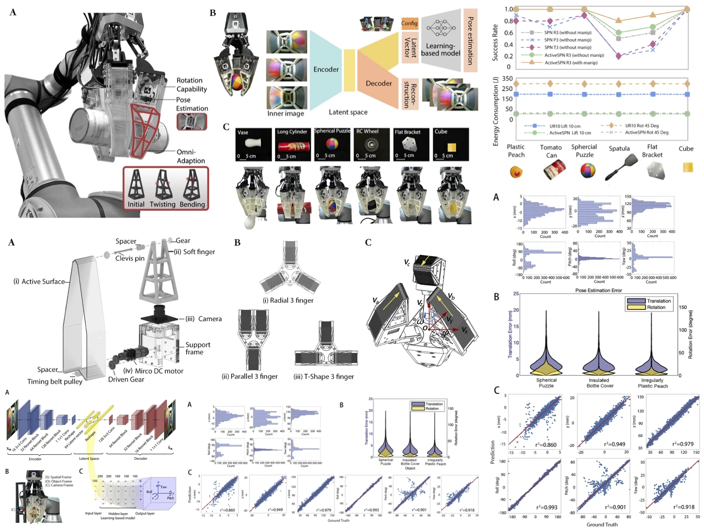

2025 · Journal Article
ActiveSPN: Active Soft Polyhedral Networks With Pose Estimation for In-Finger Object Manipulation

Abstract
Robotic grippers aim to replicate the remarkable functionalities of the human hand by providing advanced perception, adaptability, stability, and dexterity for complex tasks. Achieving these capabilities demands a sophisticated design hierarchy and robust perception mechanisms that ensure accurate manipulation. This letter introduces Active Soft Polyhedral Networks (ActiveSPN), a gripper design that leverages an active, non-biomimetic surface for precise in-hand manipulation. A vision system integrated directly into the fingers further facilitates accurate pose estimation of the in-finger object. The proposed system includes: (i) a soft polyhedral network featuring a transparent active belt to deliver complete three-dimensional adaptation and dexterous in-finger motion, and (ii) a generative learning-based pipeline for in-finger pose estimation. Experimental results demonstrate the ability of ActiveSPN to execute multi-degree-of-freedom in-finger manipulations, including two-axis rotation and one-axis translation. Moreover, the integrated vision-based pose estimation provides robust, real-time predictions, supporting consistent closed-loop control. Across diverse objects, the system achieves mean translational errors of 2.59 mm and rotational errors of 7°, highlighting a promising paradigm for compact, efficient, and dexterous robotic manipulation.
Links
BibTeX (Download)
@article{Li2025ActiveSPN,
title = {{ActiveSPN: Active Soft Polyhedral Networks With Pose Estimation for In-Finger Object Manipulation}},
author = {Sen Li and Chengxiao Dong and Chaoyang Song and Fang Wan},
journal = {IEEE Robotics and Automation Letters},
year = {2025},
volume = {10},
number = {8},
pages = {8115--8122},
doi = {10.1109/LRA.2025.3583616},
url = {https://ieeexplore.ieee.org/document/11052661}
}